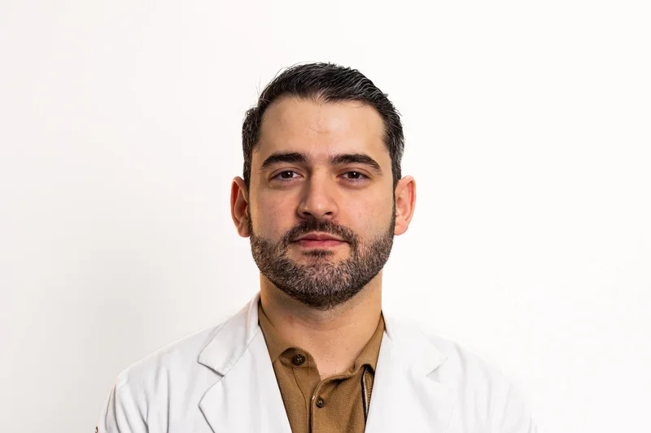

El tiempo importa. El Dr. González Saldívar —oncólogo ortopédico certificado CMOT en Monterrey— evalúa tu caso con prioridad para darte un diagnóstico certero y un plan de tratamiento claro.
Importante: Una biopsia de tumor óseo debe realizarla el mismo cirujano que operará. Una biopsia mal planeada puede comprometer la cirugía definitiva o la preservación del miembro.
Cédula Prof. 9481533 · Certificado CMOT
Cada tumor tiene características distintas. El diagnóstico histopatológico exacto determina el tratamiento correcto.
Un proceso ordenado y transparente para que nunca te sientas perdido.
El Dr. González revisa tus estudios de imagen, realiza exploración física completa y determina el nivel de urgencia de tu caso. Citas prioritarias disponibles.
Si se requiere, la biopsia se planea y ejecuta con trayecto oncológico correcto. Nunca delegar esto a otro médico —el trayecto de biopsia define el éxito quirúrgico.
Con el resultado histopatológico en mano, el Dr. González explica en detalle qué tiene, qué opciones existen y cuál es la mejor ruta para tu caso específico.
Coordinación con oncólogos médicos, radioterapeutas y patólogos. Cirugía con conservación de miembro cuando es oncológicamente posible.

Dr. Juan Carlos González Saldívar
Oncólogo Ortopédico · Cédula 9481533No todos los ortopedistas tratan tumores óseos. Se requiere una sub-especialidad específica en oncología musculoesquelética. El Dr. González Saldívar dedicó su formación y carrera entera a este campo.
Certificado por el Consejo Mexicano de Ortopedia y Traumatología (CMOT) — máxima certificación en la especialidad.
Sub-especialidad en Oncología Ortopédica en centros de referencia de México y el extranjero.
Pionero en cirugía de conservación de miembro en Nuevo León con técnicas de reconstrucción avanzada.

FEMECOT
Federación Mexicana de Colegios de Ortopedia y Traumatología
ISOLS
International Society of Limb Salvage
SLATME
Sociedad Latinoamericana de Tumores Músculo-Esqueléticos

SMOOSE
Sociedad Mexicana de Oncología Ortopédica y Sarcomas del Esqueleto
"Agradezco a Dios por permitirnos conocer al doctor Juan Carlos. Operó a mi hija de un tumor en su brazo derecho, le puso un injerto que ya tiene unido a su hueso y ya lleva el 90% de la funcionalidad. Es muy humano, paciente y un excelente ser humano."
"¡Excelente! Trato profesional y humano, sus explicaciones claras y precisas, muy acertado en tiempos de diagnóstico y pronósticos de rehabilitación."
"La atención del Doc. ha sido muy buena. Me ha dado mucha claridad en lo que es la lesión y cómo será la recuperación. 100% recomendado."
No. La mayoría de los tumores óseos son benignos y no representan riesgo vital. Sin embargo, algunos pueden crecer, causar fracturas o transformarse. Solo la biopsia histopatológica permite saber con certeza si es benigno o maligno y qué tratamiento requiere.
Una biopsia mal planeada puede contaminar tejidos adyacentes, imposibilitar la resección completa del tumor o, en el peor caso, obligar a una amputación que de otra forma no habría sido necesaria. La biopsia debe realizarla el mismo cirujano oncólogo que hará la cirugía definitiva.
Radiografías de la zona afectada, resonancia magnética (RMN) con y sin contraste, TAC si tienes, y cualquier reporte de patología previo. Si no tienes estudios, no te preocupes — podemos ordenarlos desde aquí.
Desde la primera consulta hasta el diagnóstico histopatológico completo: aproximadamente 2 semanas. Consulta inicial → biopsia (3–5 días después) → resultado (5–7 días) → consulta de seguimiento con plan de tratamiento.
No siempre. Algunos tumores benignos se pueden observar periódicamente. Otros requieren cirugía mínima. Los tumores malignos generalmente requieren cirugía + quimioterapia o radioterapia, según el tipo y estadio. El plan se define caso por caso.
El oncólogo ortopédico tiene 2–3 años adicionales de formación específica en tumores del sistema musculoesquelético. Esta sub-especialidad incluye principios oncológicos, técnicas de resección con márgenes, y reconstrucción. Es fundamental para el tratamiento correcto de tumores óseos.
La consulta se paga en mostrador y puede reembolsarse con tu seguro según tu póliza. Para procedimientos mayores —biopsia, cirugía oncológica— trabajamos directamente con GNP, AXA, MAPFRE, MetLife, Seguros Monterrey y Bupa. Contáctanos y te orientamos sobre tu cobertura específica.
Una evaluación temprana marca la diferencia entre conservar o no el miembro afectado. Tenemos citas prioritarias para casos oncológicos en Monterrey y área metropolitana.
← Conoce más sobre el Dr. González Saldívar en nuestro sitio